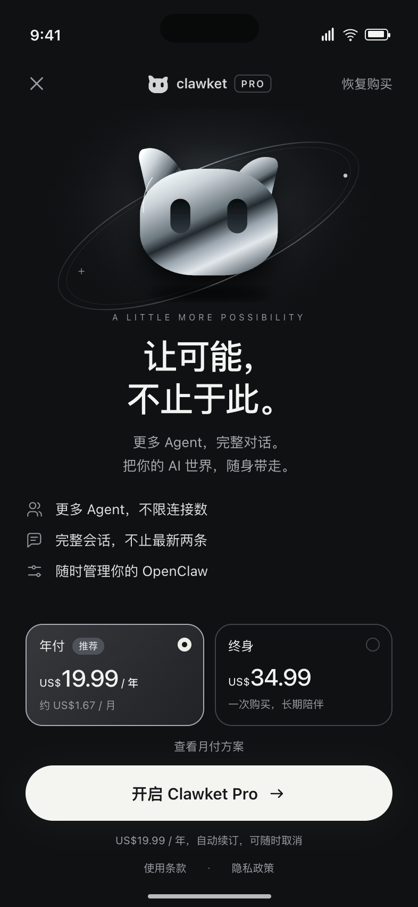
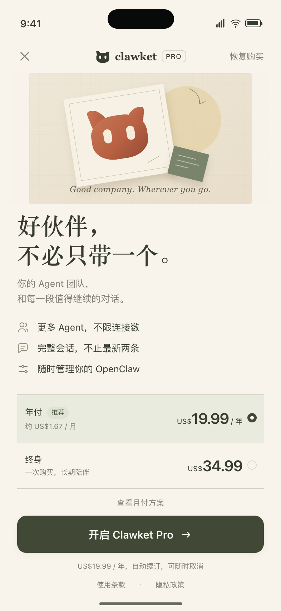
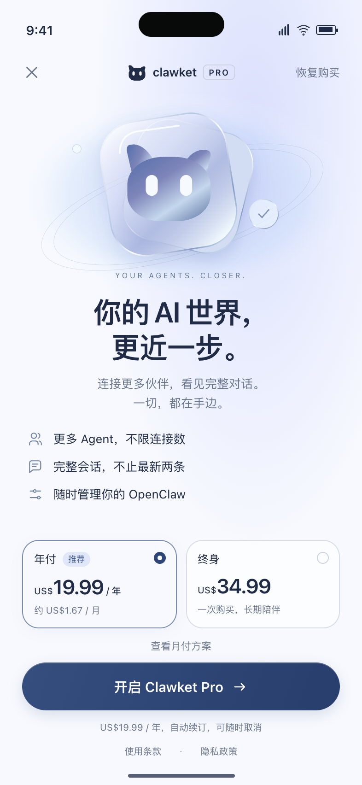
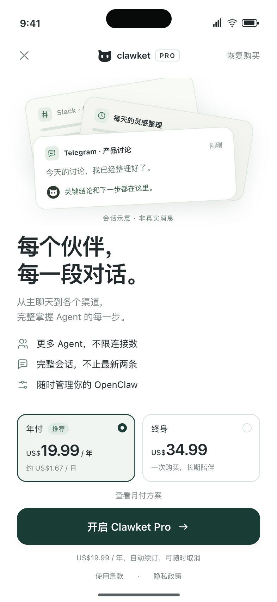

让 Pro 值得被向往，
也让价值一眼可见。
建议优先探索 A「光场」的品牌表现与 D「全景」的情境表达。艺术性负责建立记忆，具体的会话与 Agent 价值负责帮助用户做决定。两者可以最终收敛到一套设计语言。
本轮交付是 4 个独立的 HTML 视觉方向，包含入口切换、套餐选择、月付展开与购买预览。没有改动 React Native、定价配置、权益范围或付费墙触发时机。研究将品牌参考、同行经验和对 Clawket 的推断分开；尚无转化实验结果。
01 / 当前付费墙究竟如何工作
代码确认顶部不是随机换图，而是由触发付费墙的功能决定。这个基础很好，应保留并强化。当前问题是几何装饰与图标解释了“技术结构”，却很少让人感受到购买后会获得什么。
| 入口 | 当前顶部逻辑 | 建议先表达的价值 |
|---|---|---|
| 添加连接 | gatewayConnections → connections，OP / HE 字母头像与网络图标。 | 把更多伙伴带在身边；不限连接数，随时切换。 |
| 创建 Agent | agents → agents，头像群组。 | 为每个想法找到伙伴；创建能力按后端说明。 |
| 完整会话 | sessionHistory → agents，沿用头像群组，并没有专属会话视觉。 | 每一段对话都看完整；从第一句到最新回复。 |
| 配置、诊断 | manage，工具／修复意象。 | 在对应入口讲具体管理能力，不让“修复”成为所有人的主卖点。 |
| 日志、文件、搜索 | logsFiles / search，文件与搜索示意。 | 回看上下文、找到关键内容；避免暗示没有实现的云端全局搜索。 |
| 通用入口 | generic，控制塔图形。 | 更多 Agent、完整对话、随时掌握。 |
可定位到 apps/mobile/src/screens/Paywall/model.ts、PaywallScreen.tsx 和 services/pro-subscription.ts。权益列表以入口权益开头，随后拼入修复／日志等通用项并截取 3 条，因此不少入口的后两条缺乏吸引力。社会证明由 offering metadata 控制，未指定时默认显示；套餐优先顺序为年付、终身、月付，默认项受 metadata 影响并有回退。
价格基线：这次沿用用户截图的 US$19.99 / 年和 US$34.99 终身；月付 US$2.99 来自仓库规格与测试示例，未查询真实商店 offering。旧 3.0 规格还存在终身涨价计划，本轮没有将其应用到原型或后台。正式落地必须读取 RevenueCat 的本地化价格，不硬编码原型数字。
02 / 研究中真正值得借鉴的部分
更短、更清晰，有实证支持，但不是通用公式
案例证据RevenueCat 的四个改版案例展示了价格呈现、减少首屏套餐选项、缩短布局等变化，并报告各自指标提升。不过这些往往是多项变化打包上线，不能把某个提升比例归因于一张新插图，也不能拿来预测 Clawket。这里采纳清楚层级与少量选择，不照搬促销、试用开关或好评段落。RevenueCat：四个付费墙改版案例（2025-03-27，更新 2026-03-11）。
Mojo：套餐如何呈现，可能比画什么更重要
一线经验Mojo 增长负责人总结的实验中，把月付收进二级入口促进了年付选择；他也强调按地区验证布局，不能把同一种设计当作全球标准。这支持保留当前月付折叠，同时优先改套餐清晰度。对 Clawket 而言，年付与终身的长期收入结构仍需单独分析。Mojo 实验经验（2024-12-05，更新 2025-11-21）。
Headspace：先理解购买前的动机，再决定墙放多早
产品差异Headspace 经历过逐步收紧免费内容的实验；该经验不等于 Clawket 应立即封住首次使用。冥想内容可以直接消费，而 Clawket 新用户首先要连接自己的 Agent。购买前置若加重连接门槛，可能伤害激活。建议把“首次连接前、可关闭的一次介绍”作为独立实验，保持免费连接路径清楚。RevenueCat：Headspace 等硬／软付费墙案例（2023-09-28，更新 2024-06-04）。
苹果：总价清楚，本身就是品质
官方规范Apple 要求明确订阅权益与期限、完整续费价格及恢复购买方式；实际扣费金额应比折合月价突出。这次年付总价最大，折算值缩小；切换终身后，说明同步变为一次购买、无需续订。关闭、恢复购买和条款入口始终可找到。Apple：Auto-renewable subscriptions（查阅 2026-09-11）。
关于“4.4 星”：本轮全部移除。不是断言社会证明无用，而是这句泛泛的“更新快”既不回答用户的购买顾虑，也无法帮助理解 Pro。若未来加入社会证明，应基于可核验、与目标用户相关的真实内容再测试。
03 / 向品牌学习气质，而不是复制皮肤
| 参考 | 观察／来源 | 转化为自己的设计 |
|---|---|---|
| OpenAI | 官方品牌规范强调清晰、几何与人性化表达。品牌规范 | A 借鉴克制排版与光影艺术的方向，用已有猫形象做原创银色材质；不是复制官方素材。 |
| Anthropic | 官网首屏的暖底、大字、衬线段落与留白组合，呈现编辑式气质。官网 | B 使用暖纸、陶土、中文衬线与横排套餐，强调长期陪伴。 |
| Apple | 宣传页把产品与内容放在主视觉中心；文字区保持清楚。Apple Intelligence | C 把玻璃与边缘光局限在 hero；购买信息不用模糊或流光承载。 |
| Linear | 团队解释了如何以受控材质增加深度，同时维护可读性和增强对比度。A Linear spin on Liquid Glass（2025-10-21） | 吸取“装饰有边界”的原则；原型用 SVG/CSS，无系统 Liquid Glass 依赖。 |
| Grok Bot | 延续用户指定的持久 Agent 设计参考。设计文章 | 继续使用已选定的非对称耳朵猫；品牌符号保持稳定，围绕它探索材质。 |
以上颜色、气质和对应方案属于设计判断，不是这些公司的转化建议。Anthropic 与 Apple 页面做了浏览器首屏视觉检查；OpenAI 页面浏览器遇到验证屏，品牌内容通过公开网页文本读取，未声称检查了其完整动态交互。所有原型插画为代码绘制；没有下载他人宣传图作为产品资产。
04 / 四个方案，分别解决什么

独立的深色视觉场，柔和银光、轨道和轻微浮动。最值得继续精修的品牌方向。

纸张与陶土让技术柔和下来；横排价格和衬线标题，形成不同的阅读节奏。

接近现有浅色设计，边缘光和冷色层次提供品质感；迁移到全 App 的阻力较小。

让会话本身成为顶部视觉；示意内容随连接、Agent 与会话入口切换。
原型统一项：3 条以内的权益、可见关闭、年付默认选中、终身可选、月付折叠、总价优先、单一购买按钮、无评分、无虚构试用、无倒计时。切换套餐不会模拟扣费成功。动画仅用于插画，并响应减少动态效果设置。
文案边界：不说“查看别人的私聊”；说“完整会话记录”，范围是已连接 Agent 本来可访问的会话。不暗示赠送模型额度或云端托管。创建 Agent 的示范入口明确写 OpenClaw；正式 UI 必须复用后端能力门控。通用“管理 OpenClaw”权益在 Hermes-only／YouMind-only 场景需要替换为真正适用的权益，原型暂未扩展该选择器。
“推荐”替代“最划算”：年付入门支出较低，但终身在长期使用时可能更便宜。没有统一比较期限，不应笼统宣称年付最划算。折算月价约 US$1.67；这不是月度扣款金额。
05 / 最终落地与验证顺序
先选定一种品牌语言，再把情境差异收进同一套组件：共享标题区、套餐卡、主按钮、账单说明；hero 按入口换场景。价格、可售套餐、默认项、已购状态继续由 RevenueCat 决定。数据未到时给稳定加载反馈，失败时提供重试；不先显示一个假价格。
保留现有“用户想执行某操作 → 对应权益说明 → 购买 → 回到原操作”的闭环。会话入口买完后，应在原会话原地解锁；添加连接买完后，应继续连接流程。关闭付费墙保留原页面与滚动位置。恢复购买的等待、结果与失败要明确呈现。这些属于后续原生实现验收，不由 HTML 原型假装完成。
第一轮实验：在同一情境内比较选定品牌版与内容版，保持价格和默认套餐一致。按设备稳定分组，避免同一人反复换墙；分析入口、平台、语言／地区、新旧用户，先确定样本量和观察窗口，再解读差异。少量样本只用于找可用性问题，不宣布胜者。
主指标建议同时看付费墙曝光到购买完成率、每位符合条件用户的收入；护栏看首次连接成功、首次聊天、D7 留存、早期取消／退款及恢复购买失败。年付与终身分开报告。不要仅凭点击率或一次性终身销售额认定长期收益更好。
第二轮再讨论首次安装付费墙：对照组保持现状，实验组在价值说明后展示一次可关闭的 Pro 介绍。它与“必须付费才能用”的硬墙不是同一实验。公开行业数据和他人试用产品的成绩，不能替代 Clawket 的连接与激活数据。RevenueCat 的个性化能力也提示可以按入口复用模板，但没有必要为本次视觉探索更换现有渲染技术。RevenueCat 个性化付费墙。
06 / 证据范围与交付边界
研究以用户提供的案例文章为起点，再核查 Apple 官方要求、Mojo 一线实验经验、Headspace 案例与品牌官方资料。增长证据较多来自 RevenueCat 及其客户，存在供应商选择与成功案例偏差；没有把公开案例的百分比当作本项目的收益预测。没有读取本项目 RevenueCat／PostHog 转化数据，本轮不判断现有转化率高低。
原型以 393 × 852 为主画布，额外验证窄屏滚动、四入口、套餐选择、关闭／恢复入口、减少动态效果与浏览器报错。小屏或月付展开时，上方介绍可滚动，套餐与购买操作保持可见。HTML 使用自绘状态栏仅用于评审；正式原生页面须使用真实系统安全区。设备原生性能、VoiceOver/TalkBack、真实购买／恢复、完整多语言不在此次浏览器原型验收结果内。
查看 浏览器检查结果。研究来源均于 2026-09-11 查阅；链接附在对应论点处。四个原型均可直接本地打开，无网络素材依赖。